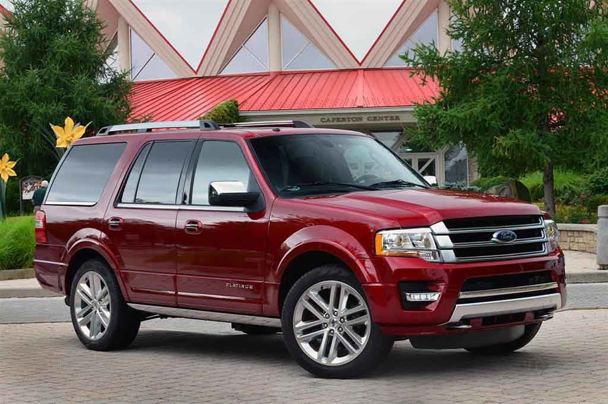

Ford EcoSport
The EcoSport in the Philippines is powered by a 1.5L Inline 4-Cylinder Ti-VCT petrol engine churning out 108 hp and 142 Nm of torque to the front wheels. This is mated to a 6-Speed PowerShift automatic or a 5-speed manual transmission.

Ford-Expedition
The lane-hogging Expedition and the even-longer Expedition EL provide room for eight adults and acres of cargo space. The 3.5-liter twin-turbo V-6 makes 365 hp; a six-speed automatic with rear-wheel drive is standard and four-wheel drive is optional. Some may scoff at a V-6 in a rig of this size, but its 9200-lb towing capacity (when properly equipped) should silence naysayers. An all-new Expedition goes on sale in fall 2017.

Ford Fusion
Four engines are available in the Fusion. The base unit remains the naturally aspirated 2.5-liter four-cylinder, but this is typically only found in fleet specials. The more common engines are the turbocharged EcoBoost engines: the 1.5-liter, the more powerful 2.0-liter four-cylinder engine or the 2.7-liter V-6.

Ford GT
Ford has approved 500 lucky people to purchase a GT; the rest of us can only dream. Prices likely will begin around $450,000. The GT has some of the most stunningly exotic bodywork around. Highlights include a mid-engine twin-turbo 3.5-liter V-6 making 647 hp and a maximum of 550 lb-ft of torque, carbon-fiber construction and body panels, active aerodynamics, and a seven-speed dual-clutch automatic; a manual won’t be offered. Ford says the top speed is 216 mph—we can’t wait to test that claim.